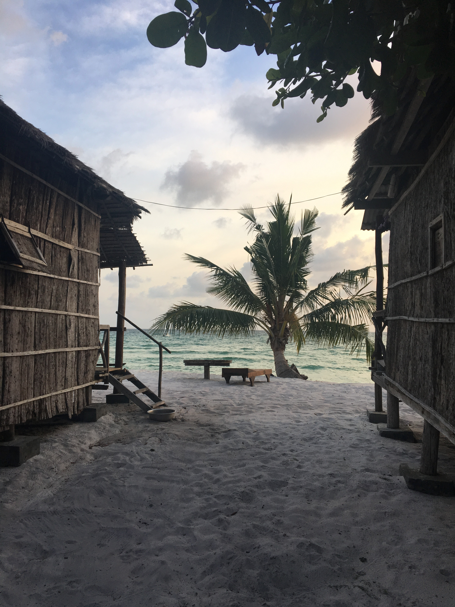
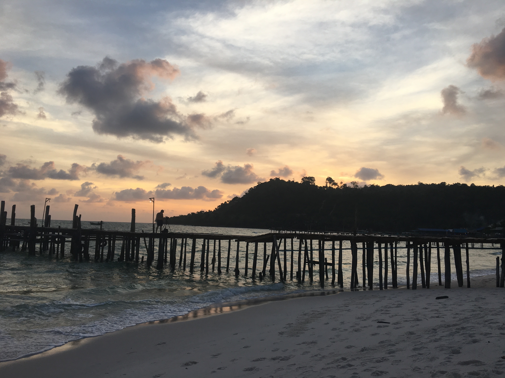

Angkor is an archaeological site of Cambodia composed of a set of ruins and hydraulic installations which was one of the capitals of the Khmer Empire, existing approximately from the 9th to the 15th century
When we talk about the dream beaches of Southeast Asia, we immediately think of the islands of southern Thailand. Yet Cambodia does not have to blush its coastline. Less touristically developed than its neighbor, the Cambodian coasts also have their share of paradise islands, real treasure of the Gulf of Thailand. Koh Rong and Koh Rong Samloem are part of these treasures. Put on your masks and snorkel, we'll take you to paradise!
Another well known beach of Sihanoukville is Otres Beach which is a little away from the city (20min by motorbike) and which therefore has an even more calm and zen atmosphere. But what is beautiful in Otres Beach and you really should not miss is Otres Market. It takes place every Saturday night and it's not just a market. Certainly, there are some handicrafts and some souvenirs from Cambodia. But what is super nice at the Otres Market is the small concerts that are organized and the very hippie atmosphere that prevails.